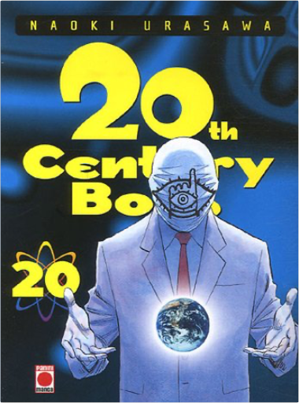
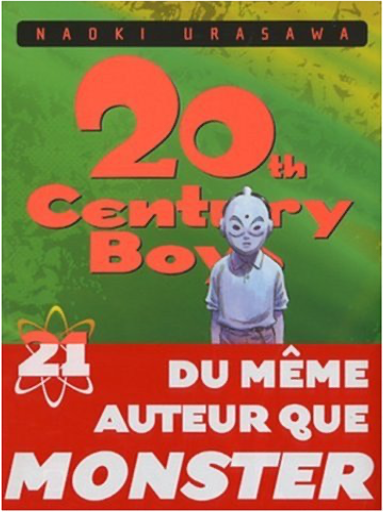

Books
Movies
Albums
Videogames
Games
BD
BD Camille
Blu-ray
Business
Camille
Comics
Cooking
Lego
Manga
Pauline
Photography
Star Wars
T'choupi
Travel
TV Shows
Un livre dont vous êtes le héro
Vinyl
Walt Disney
85
86
87
88
89
20th century boys, tome 19
naoki urasawa
5

20th century boys, tome 20
naoki urasawa
5

20th century boys, tome 21
naoki urasawa
20th century boys, tome 22
naoki urasawa
21st century boys, tome 1
naoki urasawa
21st century boys, tome 2
naoki urasawa
5
pluto, tome 1
naoki urasawa, osamu tezuka
5
pluto, tome 2
naoki urasawa, osamu tezuka
5
pluto, tome 3
naoki urasawa, osamu tezuka
3
pluto, tome 4
naoki urasawa, osamu tezuka
3
pluto, tome 5
naoki urasawa, osamu tezuka
5
pluto, tome 6
naoki urasawa, osamu tezuka
85
86
87
88
89


 Made with Delicious Library Made with Delicious Library
Made with Delicious Library Made with Delicious Library